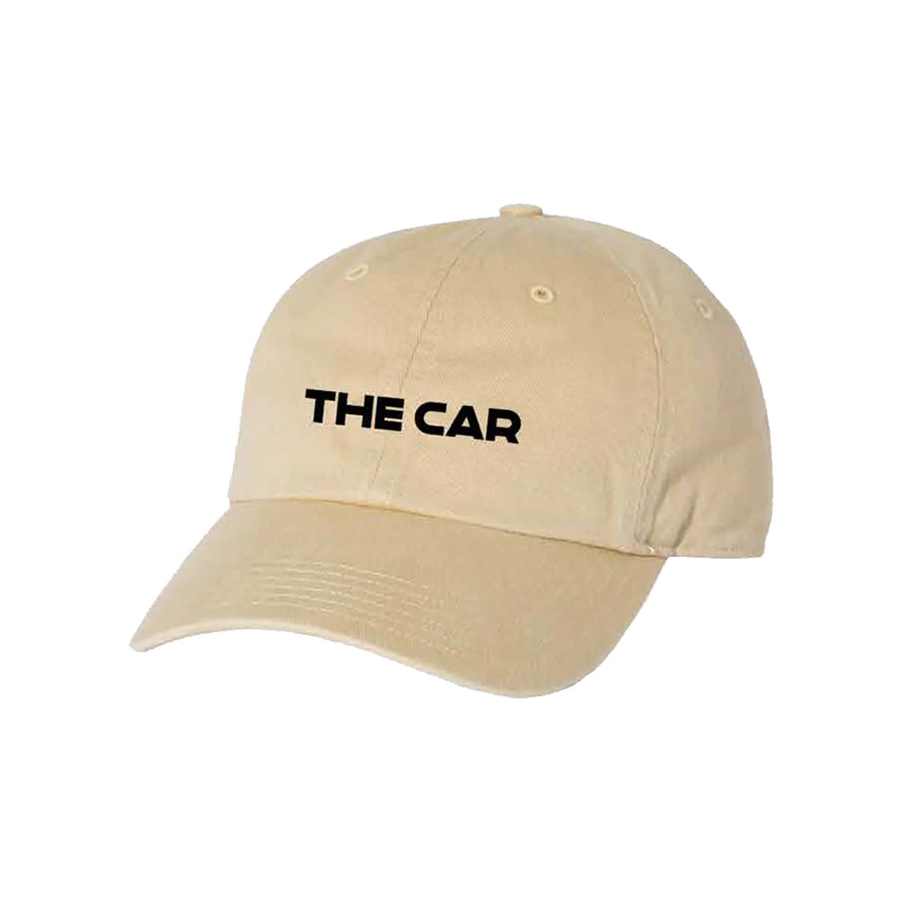
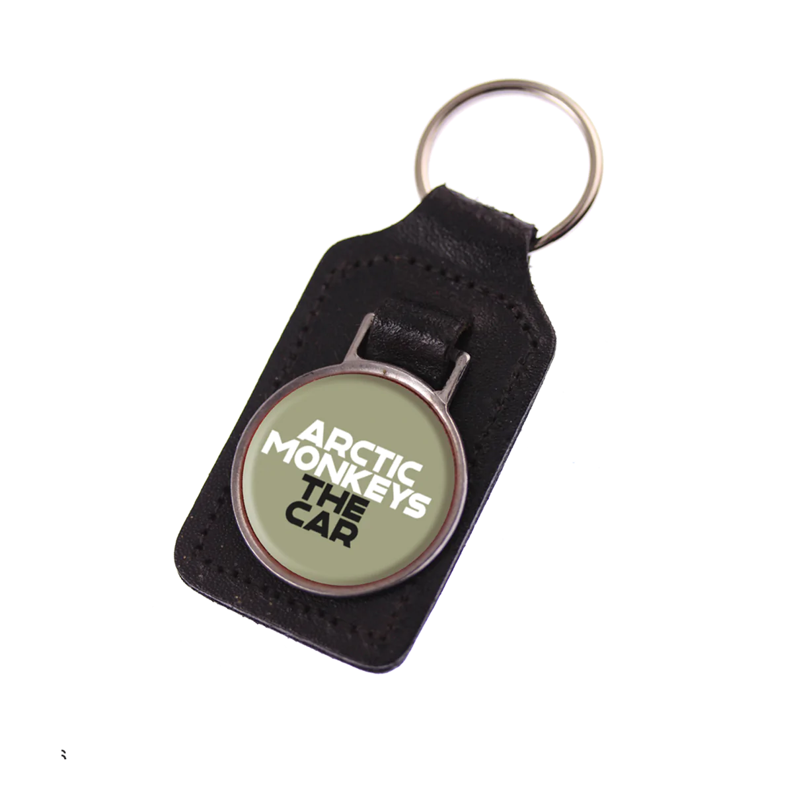

Info
De Arctic Monkeys is een Britse indierockband uit Sheffield, Engeland. De band, die in 2002 werd opgericht, bestaat uit zanger-gitarist Alex Turner, gitarist Jamie Cook, bassist Nick O'Malley en drummer Matthew Helders. Tot 2006 was Andy Nicholson bassist van de band. In 2004 en 2005 kreeg de band bekendheid door het verspreiden van hun demo's via het internet. Dit zorgde voor een mediahype rondom Arctic Monkeys en maakte hun debuutalbum Whatever people say I am, that's what I'm not in 2006 het best verkopende debuut ooit in het Verenigd Koninkrijk. Evenals het album bereikten de singles "I Bet You Look Good on the Dancefloor" en "When the Sun Goes Down" de nummer 1-positie in het land. Een jaar later volgde het tweede album Favourite Worst Nightmare, met leadsingle "Brianstorm". In 2009 verscheen het derde album Humbug, geproduceerd door Josh Homme en James Ford. Sinds 2012 wonen de bandleden in Los Angeles. De band werd op hun debuutalbum gekenmerkt door hun snelle, agressieve postpunk en Turners teksten die gebaseerd waren op eigen observaties en ervaringen in Sheffield. Met de komst van hun twee laatste albums evolueerde het geluid meer richting psychedelische en alternatieve rock. voor nog extra informatie klik hier
Merch
 25 Euro  8 Euro 30 Euro
30 Euro
 30 Euro
30 Euro
Tour
- Ma 24 apr. Linz, Oostenrijk
- Do 27 apr. Hamburg, Duidsland
- Zo 30 apr. Oslo, Noorwegen
- Wo 3 mei Oberhaisen, Duidsland
- Za 6 mei Amsterdam, Nederland
- Di 9 mei Parijs, Frankrijk
- Wo 7 jun. Norwich, Verenigd Koningkrijk
Gallery
Hier zijn enkele foto's van de Arctic Monkeys


Extra
De meest gespeelde nummers
- I Bet You Look Good On The Dancefloor
- Do I Wanna Know?
- Tranquility Base Hotel & Casino
- Hambug
- Suck It And See